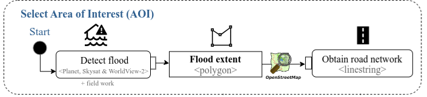

The main objects of the research were the flood extent, road network , the administrative boundaries from the municipalities and hospitals.
The study area is located in the Federal Unit of Rio Grande do Sul, within the “central core” of the Porto Alegre Metropolitan Region. It includes 9 municipalities classified as dense urban settlement according to the Global Human Settlement SMOD dataset.

Fig 2. The study area is located in the Federal Unit of Rio Grande do Sul, within the “central core” of the Porto Alegre Metropolitan Region. It includes 9 municipalities classified as dense urban settlement according to the Global Human Settlement SMOD dataset
geoBoundaries provided the administrative units (ADM2) of Brazil (Runfola et al. 2020). We subset the data using 9 municipalities defined as the core metropolitan area of Rio Grande do Sul. The reason why we selected these municipalities is that they intersected with the dense urban center 1210 from the Global Human Settlement Layer (Schiavina, Melchiorri, and Pesaresi 2023).
The Federal University of Rio Grande do Sul published the flood extent observed from the Skystat, Planet and WorldView-2 satellites and also validated through field surveys (Possantti et al. 2024).
The State Health Department shared the capacity of Intense Care Units (ICU) beds (PCDaS 2022), while the “Secretaria Estadual da Saúde/DGTI” published the healthcare facilities in Rio Grande do Sul with ICU beds using a WFS.
We used the ogr2ogr program from GDAL (GDAL/OGR contributors 2025) and the shp2pgsql2 from PostGIS 3 command to import the data directly to PostgreSQL. The parameters from the docker were docker as user (-U), 25432 for the port (-p) and localhost for the host (-h). We transformed the original coordinate reference system (CRS) 54009 to 4326. We also include three troubleshootings to solve potential errors found during this step.
[AoI-1] How to import using ogr2ogr and shp2pgsql
# Urban Center to select core metropolitan area (2.514s). Note: agile_gis_2025_rs is a created schema, by default, the schema public is install. In that case, remove "agile_gis_2025_rs"time shp2pgsql -D-I-s 54009:4326 GHS_SMOD_E2020_GLOBE_R2023A_54009_1000_UC_V2_0.shp agile_gis_2025_rs.urban_center_4326 |psql-p 25432 -U docker -d gis -h localhost# Hospitals (0.217s)time ogr2ogr -f PostgreSQL PG:"host=localhost port= 25432 user=docker password=docker dbname=gis schemas=agile_gis_2025_rs" Hospitais_com_Leitos_de_UTIs_no_RS.geojson -nln hospitals # Administrative units (5.854s)time ogr2ogr -f PostgreSQL PG:"host=localhost port= 25432 user=docker password=docker dbname=gis schemas=agile_gis_2025_rs" geoBoundaries-BRA-ADM2.geojson -nln nuts# Flood extent (1.008s)time ogr2ogr -f PostgreSQL PG:"host=localhost port= 25432 user=docker password=docker dbname=gis schemas=agile_gis_2025_rs" rhguaiba_planetskysat_inundacao_obs_20240506.gpkg -nln flooding_raw
Troubleshooting 1: When shp2pgsql failed to be located despite being installed with postgis, we changed the user permissions in ubuntu to sucessfully find it. Similarly, make sure to be in the directory where the files are to find them. Alternatively, it is required to specifically indicate the file address.
Troubleshooting 2: When importing the urban center, an error regarding the type of geometry appeared. For this, we can use the code ogr2ogr -lco GEOMETRY_NAME=geom -t_srs EPSG:4326 -f PostgreSQL PG:"host=localhost port= 25432 user=docker password=docker dbname=gis schemas=agile_gis_2025_rs" GHS_SMOD_E2020_GLOBE_R2023A_54009_1000_UC_V2_0.shp -nlt MULTIPOLYGON -nln urban_center_4326 based on posts 4 and 5
Troubleshooting 3: When using functions in the schema agile_gis_2025_rs, some of the functions or tables were not found. For this, we used GRANT SELECT ON ALL TABLES IN SCHEMA agile_gis_2025_rs TO docker;6 and SET search_path TO agile_gis_2025_rs,public;7.
Indirectly using R
The library DBI (Wickham and Müller 2001) uploaded the information to the server using also RPostgres (Wickham, Ooms, and Müller 2025). Although there are different methodologies to upload a csv without manually creating the table first in PostgreSQL 8, we used R. Another reason was that in later steps R is used to calculate the weighted origin and destination matrix (OD).
[Aoi-2] How to import using R
library(DBI)library(dplyr)library(RPostgres)## connect to PostgreSQLconnection <- DBI::dbConnect(RPostgres::Postgres(),user="docker",password="docker",host="localhost",dbname="gis",port=25432)## Connect to PostgreSQL to read CSV without defining the table manually in PostgreSQLlibrary(tictoc)tic()etlcnes_hospital_selected <-read.csv("~/agile-gscience-2024-rs-flood/data/source_data/ETLCNES_SR_RS_21_12_t.csv") |> dplyr::select(c("CNES","QTLEITP1","QTLEITP2","QTLEITP3","NAT_JUR"))toc() # 1.576 sec elapsed## Write table using PostgreSQL connectionDBI::dbWriteTable(connection, DBI::Id(schema="agile_gis_2025_rs",table="etlcnes_hospital_selected"), etlcnes_hospital_selected)
Tidy data
Global Human Settlement: Model grid
We filtered the Global Human Settlements (GHS) to the area of interest, the municipality of Porto Alegre. This returned the dense urban center 1210 (gid). Then, we selected those municipalities that intersected with this dense urban center. Although our methodology focused on the impact of floods in the dense urban center, future analysis could easily adapt this methodology to assess the impact of landslides9 in other type of settlement such as those located in rural areas.
Create urban center table for leaflet visualization
---- Dense urban center that intersects with Porto Alegre -> ***Input for leaflet map***EXPLAINANALYZECREATETABLE urban_center_4326_core ASSELECT duc.*FROM urban_center_4326 AS duc, (SELECT*FROM nuts WHERE shapename ='Porto Alegre') AS porto_alegreWHERE st_intersects( duc.geom, porto_alegre.wkb_geometry); --- 13.714 ms
Municipalities
Firstly, we created a common table expression (CTE) that contained the GHS-SMOD 10 (i.e. urban_center_4326) dense urban settlement that intersected with the municipality of Porto Alegre. Table 1 includes the 9 municipalities found running the query [AoI-3]. We added the PIB per capita from Instituto Brasileiro de Geografia e Estatistica11 and the affected population from Departamento de Economia e Estatistica12. We named these 9 municipalities as municipalities_ghs, since it is derived from the Global Human Settlment dataset.
[AoI-3] How to select the municipalities
--- Municipalities contained in the urban_center_4326EXPLAINANALYZECREATETABLE municipalities_ghs ASWITH porto_alegre_ghs AS(SELECT ghs.*FROM urban_center_4326 AS ghsJOIN nuts ON st_intersects(nuts.wkb_geometry, ghs.geom)WHERE nuts.shapename ='Porto Alegre'),municipalities_ghs_geom AS (SELECT municipalities.*FROM nuts AS municipalities, porto_alegre_ghs AS ghsWHERE st_intersects(municipalities.wkb_geometry, ghs.geom))SELECT*FROM municipalities_ghs_geom; --- 19.062ms
Table 1: The AoI contained 9 municipalities
Core Metropolitan Area
We created the table core_metropolitan_area that cover the area of study by aggregating the geometry of the 9 municipalities into one single geometry. The road network or built-up density layers used this core metropolitan area as a mask. Defining the area of interest to this mask may exclude important areas located in the boundaries.
[AoI-4] How to create the Core Metropolitan Area
---- Defined core metropolitan area of the municipalities_ghsEXPLAINANALYZECREATETABLE core_metropolitan_area ASSELECT st_union(wkb_geometry) AS geomFROMmunicipalities_ghs; --- 15.382ms
Global Human Settlement: Built-up volume
After reprojecting the CRS to 4326 from the raster and vector data, we masked the global built-up volume raster to the core metropolitan area. This will be later used to sample the origin and destination based on the built-up volume. More dense areas contained a higher concentration of origin and destination from which connectivity is derived.
[Aoi-5] How to import and mask GHS-V
# Import datalibrary(sf) # vector fileslibrary(terra) # raster fileslibrary(tictoc) # timingtic()buildings_density_global <- terra::rast('~/GHS_BUILT_V_E2020_GLOBE_R2023A_54009_100_V1_0.tif')toc() ## 0.088 sec elapsedtic()municipalities_ghs_transformed <- municipalities_ghs |>st_transform(crs(buildings_density_global))toc() ## 0.071 sec elapsedtic()building_density_local_aoi <-crop(buildings_density_global, municipalities_ghs_transformed)toc() ## 0.074 sec elapsed## Reproject for samplingtic()building_density_local_aoi_4326 <- terra::project(building_density_local_aoi,crs(municipalities_ghs))toc() ### 0.595 sec elapsedtic()building_density_local_aoi_4326_masked <- terra::mask(building_density_local_aoi_4326, municipalities_ghs) toc() ## 0.089 sec elapsedterra::writeRaster(building_density_local_aoi_4326_masked, "GHS_BUILT_V_E2020_GLOBE_R2023A_4326_100_V1_0_RioGrandeDoSul.tif")### Reclassify values 0 with missing values (NA) to make them transparent in the leaflet mapvalues(building_density_local_aoi_4326_masked)[values(building_density_local_aoi_4326_masked) ==0] =NA
GDAL/OGR contributors. 2025. GDAL/OGR Geospatial Data Abstraction Software Library. Open Source Geospatial Foundation. https://doi.org/10.5281/zenodo.5884351.
Possantti, Iporã, Ana Aguirre, Camila Alberti, Laura Azeredo, Mariana Barcelos, Fernando Becker, Mateus Camana, et al. 2024. “Banco de Dados Das Cheias Na Região Hidrográfica Do Lago Guaíba Em Maio de 2024.” Zenodo. https://doi.org/10.5281/ZENODO.13999016.
Runfola, Daniel, Austin Anderson, Heather Baier, Matt Crittenden, Elizabeth Dowker, Sydney Fuhrig, Seth Goodman, et al. 2020. “geoBoundaries: A Global Database of Political Administrative Boundaries.” Edited by Wenwu Tang. PLOS ONE 15 (4): e0231866. https://doi.org/10.1371/journal.pone.0231866.
Schiavina, Marcello, Michele Melchiorri, and Martino Pesaresi. 2023. “GHS-SMOD R2023A - GHS Settlement Layers, Application of the Degree of Urbanisation Methodology (Stage i) to GHS-POP R2023A and GHS-BUILT-s R2023A, Multitemporal (1975-2030).” European Commission, Joint Research Centre (JRC). https://doi.org/10.2905/A0DF7A6F-49DE-46EA-9BDE-563437A6E2BA.
# Select AoIThe main objects of the research were the flood extent, road network , the administrative boundaries from the municipalities and hospitals. The study area is located in the Federal Unit of Rio Grande do Sul, within the "central core" of the Porto Alegre MetropolitanRegion. It includes 9 municipalities classified as dense urban settlement according to the Global Human Settlement SMOD dataset.* <p> geoBoundaries provided the <span class="font-color">**administrative units (ADM2)**</span> of Brazil [@Runfola2020]. We subset the data using 9 municipalities defined as the core metropolitan area of Rio Grande do Sul. The reason why we selected these municipalities is that they intersected with the dense urban center 1210 from the Global Human Settlement Layer [@https://doi.org/10.2905/a0df7a6f-49de-46ea-9bde-563437a6e2ba].</p>* <p> The Federal University of Rio Grande do Sul published the <span class="font-color">**flood extent**</span> observed from the Skystat, Planet and WorldView-2 satellites and also validated through field surveys [@https://doi.org/10.5281/zenodo.13999016].</p>* <p> The <span class="font-color">**road network**</span> is downloaded from GeoFabrik^[[https://download.geofabrik.de/south-america/brazil/sul.html#](https://download.geofabrik.de/south-america/brazil/sul.html#)]. </p>* The State Health Department shared the capacity of Intense Care Units (ICU) beds [@https://doi.org/10.7303/syn32211006.1], while the "Secretaria Estadual da Saúde/DGTI" published the <span class="font-color">**healthcare facilities**</span> in Rio Grande do Sul with ICU beds using a [WFS](https://iede.rs.gov.br/server/rest/services/SES/Hospitais_Leitos_UTI_RS/FeatureServer).```{=html}<iframe width="780" height="500" src="data/media/import_data_v0.html" title="Quarto Documentation"></iframe>``````{r}#| echo: true#| code-summary: "R code to create interactive map based on leaflet"#| eval: falselibrary(leaflet.extras)library(leaflet)leaflet() |>addTiles() |>addProviderTiles("OpenStreetMap", group ="OpenStreetMap") |>addProviderTiles("Esri.WorldImagery", group ="Esri.WorldImagery") |>addPolygons(data=municipalities_ghs_leaflet,weight =2,color ="black",fillOpacity =0,dashArray ="3",popup =~paste0( "<b>Municipality: </b>", shapename, "<br/>","<b>Population affected: </b>", Pop.Aff, "<br/>","<b>PIB per capita: </b>", GDP, "<br/>"),group="Municipalities (CMA)") |>addPolygons(data=urban_center_4326_core,fillColor ="yellow",opacity =0.2,weight =2,color ="black",dashArray ="1",group="Dense Urban Center Settlment",popup =~paste0( "<b>Settlment ID: </b>", gid, "<br/>","<b>Population: </b>", round(pop_2020), "<br/>","<b>Building Surface (m2): </b>", round(bu_m2_2020))) |>addPolygons(data=flooding_simplified_porto_united,fillColor ="#dec8b7ff",fillOpacity =0.6,weight =1,color ="#4b2609",dashArray ="1",group="Flood extent") |>addCircles(data=filter(hospital_bed_aux_leaflet, nat_jur_cat=="Public"),radius=10,weight=15,opacity =0.6,color ="#6da991ff",popup=~paste0("<b>Hospital: </b>", stringr::str_to_title(ds_cnes), "<br/>","<b>Type Jur: </b>", nat_jur_cat, "<br/>","<b>Nature Jur: </b>", stringr::str_to_title(nm_razao_s), "<br/>","<b>UCI Beds: </b>", beds,"<br/>","<b>Risk: </b>", tp_risco),group="Hospital (public)") |>addCircles(data=filter(hospital_bed_aux_leaflet, nat_jur_cat=="Private"),radius=10,weight=15,opacity =0.6,color ="#3f98c3ff",popup=~paste0("<b>Hospital: </b>", stringr::str_to_title(ds_cnes), "<br/>","<b>Type Jur: </b>", nat_jur_cat, "<br/>","<b>Nature Jur: </b>", stringr::str_to_title(nm_razao_s), "<br/>","<b>UCI Beds: </b>", beds,"<br/>","<b>Risk: </b>", tp_risco),group="Hospital (private)") |>addRasterImage(building_density_local_aoi_4326_masked,opacity =0.5,group="Building density") |>addLayersControl(baseGroups =c("OpenStreetMap","Esri.WorldImagery"),overlayGroups =c("Municipalities (CMA)","Hospital (public)","Hospital (private)","Dense Urban Center Settlment","Flood extent","Building density"),options =layersControlOptions(collapsed =FALSE)) |>hideGroup(c("Dense Urban Center Settlment","Building density"))```## Import data### Directly to PostgreSQLWe used the ogr2ogr program from GDAL [@GDAL] and the shp2pgsql^[[shp2pgsql: https://www.bostongis.com/pgsql2shp_shp2pgsql_quickguide.bqg](https://www.bostongis.com/pgsql2shp_shp2pgsql_quickguide.bqg)] from PostGIS ^[[PostGIS: https://postgis.net/](https://postgis.net/)] command to import the data directly to PostgreSQL. The parameters from the docker were _docker_ as user (-U), _25432_ for the port (-p) and _localhost_ for the host (-h). We transformed the original coordinate reference system (CRS) 54009 to 4326. We also include three troubleshootings to solve potential errors found during this step. ```{bash}#| eval: false#| echo: true#| code-summary: "[AoI-1] How to import using ogr2ogr and shp2pgsql"# Urban Center to select core metropolitan area (2.514s). Note: agile_gis_2025_rs is a created schema, by default, the schema public is install. In that case, remove "agile_gis_2025_rs"time shp2pgsql -D-I-s 54009:4326 GHS_SMOD_E2020_GLOBE_R2023A_54009_1000_UC_V2_0.shp agile_gis_2025_rs.urban_center_4326 |psql-p 25432 -U docker -d gis -h localhost# Hospitals (0.217s)time ogr2ogr -f PostgreSQL PG:"host=localhost port= 25432 user=docker password=docker dbname=gis schemas=agile_gis_2025_rs" Hospitais_com_Leitos_de_UTIs_no_RS.geojson -nln hospitals # Administrative units (5.854s)time ogr2ogr -f PostgreSQL PG:"host=localhost port= 25432 user=docker password=docker dbname=gis schemas=agile_gis_2025_rs" geoBoundaries-BRA-ADM2.geojson -nln nuts# Flood extent (1.008s)time ogr2ogr -f PostgreSQL PG:"host=localhost port= 25432 user=docker password=docker dbname=gis schemas=agile_gis_2025_rs" rhguaiba_planetskysat_inundacao_obs_20240506.gpkg -nln flooding_raw```**Troubleshooting 1**:When shp2pgsql failed to be located despite being installed with postgis, we changed the user permissions in ubuntu to sucessfully find it. Similarly, make sure to be in the directory where the files are to find them. Alternatively, it is required to specifically indicate the file address.**Troubleshooting 2**:When importing the urban center, an error regarding the type of geometry appeared. For this, we can use the code `ogr2ogr -lco GEOMETRY_NAME=geom -t_srs EPSG:4326 -f PostgreSQL PG:"host=localhost port= 25432 user=docker password=docker dbname=gis schemas=agile_gis_2025_rs" GHS_SMOD_E2020_GLOBE_R2023A_54009_1000_UC_V2_0.shp -nlt MULTIPOLYGON -nln urban_center_4326` based on posts ^[[https://gis.stackexchange.com/questions/259442/unable-to-upload-large-vector-file-to-postgis-errorgeometry-type-multisurface](https://gis.stackexchange.com/questions/259442/unable-to-upload-large-vector-file-to-postgis-errorgeometry-type-multisurface)] and ^[[https://gis.stackexchange.com/questions/233997/ogr2ogr-filegdb-to-postgis-change-geometry-column-and-srid](https://gis.stackexchange.com/questions/233997/ogr2ogr-filegdb-to-postgis-change-geometry-column-and-srid)]**Troubleshooting 3**: When using functions in the schema agile_gis_2025_rs, some of the functions or tables were not found. For this, we used `GRANT SELECT ON ALL TABLES IN SCHEMA agile_gis_2025_rs TO docker;` ^[[https://stackoverflow.com/questions/12986368/installing-postgresql-extension-to-all-schemas](https://stackoverflow.com/questions/12986368/installing-postgresql-extension-to-all-schemas)] and `SET search_path TO agile_gis_2025_rs,public;`^[[https://gis.stackexchange.com/questions/354523/use-postgis-functions-from-an-other-schema-than-public](https://gis.stackexchange.com/questions/354523/use-postgis-functions-from-an-other-schema-than-public)]. ### Indirectly using RThe library DBI [@DBI] uploaded the information to the server using also RPostgres [@RPostgres]. Although there are different methodologies to upload a csv without manually creating the table first in PostgreSQL ^[[https://stackoverflow.com/questions/21018256/can-i-automatically-create-a-table-in-postgresql-from-a-csv-file-with-headers](https://stackoverflow.com/questions/21018256/can-i-automatically-create-a-table-in-postgresql-from-a-csv-file-with-headers)], we used R. Another reason was that in later steps R is used to calculate the weighted origin and destination matrix (OD).```{r}#| echo: true#| eval: false#| code-summary: "[Aoi-2] How to import using R"library(DBI)library(dplyr)library(RPostgres)## connect to PostgreSQLconnection <- DBI::dbConnect(RPostgres::Postgres(),user="docker",password="docker",host="localhost",dbname="gis",port=25432)## Connect to PostgreSQL to read CSV without defining the table manually in PostgreSQLlibrary(tictoc)tic()etlcnes_hospital_selected <-read.csv("~/agile-gscience-2024-rs-flood/data/source_data/ETLCNES_SR_RS_21_12_t.csv") |> dplyr::select(c("CNES","QTLEITP1","QTLEITP2","QTLEITP3","NAT_JUR"))toc() # 1.576 sec elapsed## Write table using PostgreSQL connectionDBI::dbWriteTable(connection, DBI::Id(schema="agile_gis_2025_rs",table="etlcnes_hospital_selected"), etlcnes_hospital_selected)``````{r}#| echo: false#| eval: falsemunicipalities_ghs_leaflet <- sf::st_read(connection, DBI::Id(schema="agile_gis_2025_rs" ,"municipalities_ghs_leaflet"))hospital_bed_aux_leaflet <- sf::st_read(connection, DBI::Id(schema="agile_gis_2025_rs" ,"hospital_bed_aux_leaflet"))flooding_simplified_porto_united <- sf::st_read(connection, DBI::Id(schema="agile_gis_2025_rs" ,"flooding_simplified_porto_united"))urban_center_4326_core <- sf::st_read(connection, DBI::Id(schema="agile_gis_2025_rs" ,"urban_center_4326_core"))municipalities_ghs <- sf::st_read(connection, DBI::Id(schema="agile_gis_2025_rs" ,"municipalities_ghs"))```## Tidy data### Global Human Settlement: Model gridWe filtered the Global Human Settlements (GHS) to the area of interest, the municipality of Porto Alegre. This returned the dense urban center 1210 (gid). Then, we selected those municipalities that intersected with this dense urban center. Although our methodology focused on the impact of floods in the dense urban center, future analysis could easily adapt this methodology to assess the impact of landslides^[[Landslides (red): https://ufrgs.maps.arcgis.com/apps/mapviewer/index.html?webmap=17a2432cbbd84ecf9be28bb8d3f4e450](https://ufrgs.maps.arcgis.com/apps/mapviewer/index.html?webmap=17a2432cbbd84ecf9be28bb8d3f4e450)] in other type of settlement such as those located in rural areas. ```{sql}#| eval: false#| echo: true#| code-summary: Create urban center table for leaflet visualization ---- Dense urban center that intersects with Porto Alegre -> ***Input for leaflet map***EXPLAINANALYZECREATETABLE urban_center_4326_core ASSELECT duc.*FROM urban_center_4326 AS duc, (SELECT*FROM nuts WHERE shapename ='Porto Alegre') AS porto_alegreWHERE st_intersects( duc.geom, porto_alegre.wkb_geometry); --- 13.714 ms```### MunicipalitiesFirstly, we created a common table expression (CTE) that contained the GHS-SMOD ^[[https://human-settlement.emergency.copernicus.eu/download.php?ds=smod](https://human-settlement.emergency.copernicus.eu/download.php?ds=smod)] (i.e. _urban_center_4326_) dense urban settlement that intersected with the municipality of Porto Alegre. @tbl-municipalities-ghs includes the 9 municipalities found running the query [AoI-3]. We added the PIB per capita from _Instituto Brasileiro de Geografia e Estatistica_ ^[[IBGE: https://www.ibge.gov.br/cidades-e-estados/rs/](https://www.ibge.gov.br/cidades-e-estados/rs/)] and the affected population from _Departamento de Economia e Estatistica_ ^[[DEE-SPGG: https://mup.rs.gov.br/](https://mup.rs.gov.br/)]. We named these 9 municipalities as _municipalities_ghs_, since it is derived from the Global Human Settlment dataset.```{sql}#| eval: false#| echo: true#| code-summary: "[AoI-3] How to select the municipalities" --- Municipalities contained in the urban_center_4326EXPLAINANALYZECREATETABLE municipalities_ghs ASWITH porto_alegre_ghs AS(SELECT ghs.*FROM urban_center_4326 AS ghsJOIN nuts ON st_intersects(nuts.wkb_geometry, ghs.geom)WHERE nuts.shapename ='Porto Alegre'),municipalities_ghs_geom AS (SELECT municipalities.*FROM nuts AS municipalities, porto_alegre_ghs AS ghsWHERE st_intersects(municipalities.wkb_geometry, ghs.geom))SELECT*FROM municipalities_ghs_geom; --- 19.062ms``````{r}#| echo: false#| eval: true#| warning: false#| message: false#| label: tbl-municipalities-ghs#| tbl-cap: The AoI contained 9 municipalitieslibrary(RPostgres)library(DBI)library(tidyverse)## connect to PostgreSQLconnection <- DBI::dbConnect(RPostgres::Postgres(),user="docker",password="docker",host="localhost",dbname="gis",port=25432)municipalities_ghs <- sf::st_read(connection, DBI::Id(schema="agile_gis_2025_rs",table="municipalities_ghs"))library(DT)library(sf)municipalities_ghs |> sf::st_drop_geometry() |>select(ogc_fid, shapename, shapeid) |> DT::datatable()```### Core Metropolitan AreaWe created the table _core_metropolitan_area_ that cover the area of study by aggregating the geometry of the 9 municipalities into one single geometry. The road network or built-up density layers used this core metropolitan area as a mask. Defining the area of interest to this mask may exclude important areas located in the boundaries. ```{sql}#| eval: false#| echo: true#| code-summary: "[AoI-4] How to create the Core Metropolitan Area"---- Defined core metropolitan area of the municipalities_ghsEXPLAINANALYZECREATETABLE core_metropolitan_area ASSELECT st_union(wkb_geometry) AS geomFROMmunicipalities_ghs; --- 15.382ms```### Global Human Settlement: Built-up volumeAfter reprojecting the CRS to 4326 from the raster and vector data, we masked the global built-up volume raster to the core metropolitan area. This will be later used to sample the origin and destination based on the built-up volume. More dense areas contained a higher concentration of origin and destination from which connectivity is derived. ```{r}#| echo: true#| eval: false#| code-summary: "[Aoi-5] How to import and mask GHS-V"# Import datalibrary(sf) # vector fileslibrary(terra) # raster fileslibrary(tictoc) # timingtic()buildings_density_global <- terra::rast('~/GHS_BUILT_V_E2020_GLOBE_R2023A_54009_100_V1_0.tif')toc() ## 0.088 sec elapsedtic()municipalities_ghs_transformed <- municipalities_ghs |>st_transform(crs(buildings_density_global))toc() ## 0.071 sec elapsedtic()building_density_local_aoi <-crop(buildings_density_global, municipalities_ghs_transformed)toc() ## 0.074 sec elapsed## Reproject for samplingtic()building_density_local_aoi_4326 <- terra::project(building_density_local_aoi,crs(municipalities_ghs))toc() ### 0.595 sec elapsedtic()building_density_local_aoi_4326_masked <- terra::mask(building_density_local_aoi_4326, municipalities_ghs) toc() ## 0.089 sec elapsedterra::writeRaster(building_density_local_aoi_4326_masked, "GHS_BUILT_V_E2020_GLOBE_R2023A_4326_100_V1_0_RioGrandeDoSul.tif")### Reclassify values 0 with missing values (NA) to make them transparent in the leaflet mapvalues(building_density_local_aoi_4326_masked)[values(building_density_local_aoi_4326_masked) ==0] =NA```